For Terrell · Nov 14, 2026 · nothing here is live
tkhub.app: everything in preview 13r, on one page
Each change below has a picture (left: what tkhub.app shows today, right: the preview) and a link to try it. Nothing was removed or hidden. The live Drive game at /drive/ is untouched. If you are happy with it, say “publish 13r”: the upload package is ready and can be undone in one step.
Home page
Restored sections and launch screen
The sections you approved bringing back this morning (price doors, app showcase, Founders band, chapter rail, footer inboxes), the "Drive it" section, the TK Hub launch screen for about a second, full-resolution app icons, and readable small text in light mode.
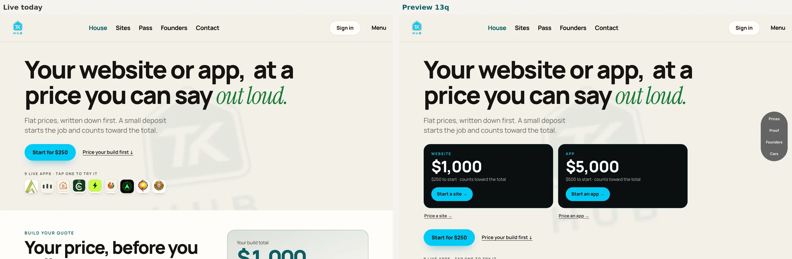
Footer links
Privacy, Terms, Data deletion, Child safety and the words tkhub.app added after the existing links. Nothing else in the footer changed.
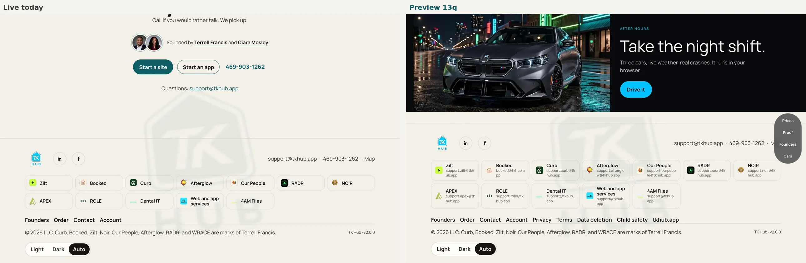
Pages that were broken or blank
Ten pages that opened blank
/app, /bench, /bill, /claims, /imaging, /line, /office, /pay, /wire now say where to go (apexpeakofcare.app); /ciara links to Founders. The original "APEX" stays.
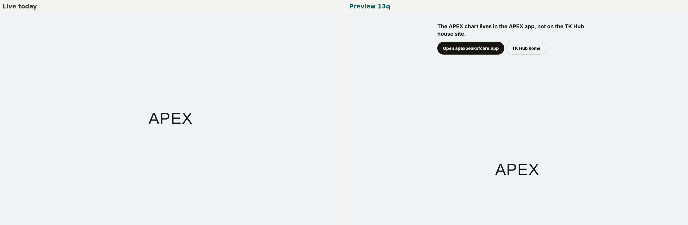
A real TK Hub 404 page
Same sentence, in TK Hub's own fonts and colours, with "Back to TK Hub" (you approved D15).
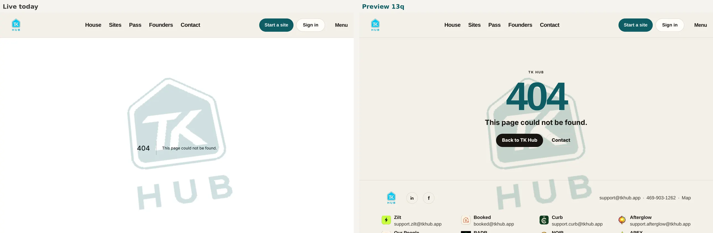
A page for every app
/apps/curb and the other app pages (restored) now show the @tkhub.app support inboxes everywhere, including in what Google sees.
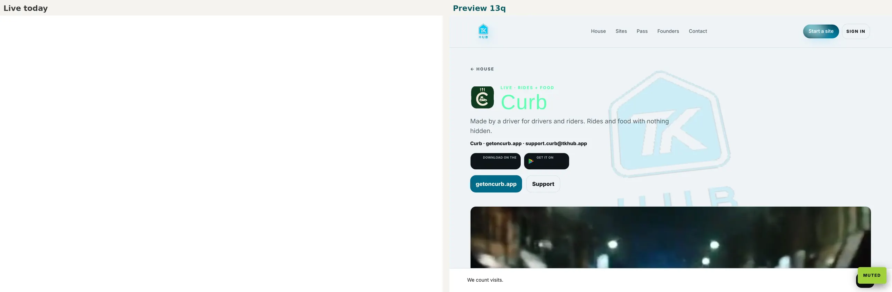
Privacy and accounts
Apple and X sign-in shown as off (your interim OK)
They stay on the page, greyed out, with one sentence why. Google, password and email link work as before. They switch on by themselves once you sign in to the Apple and X developer portals (H22).
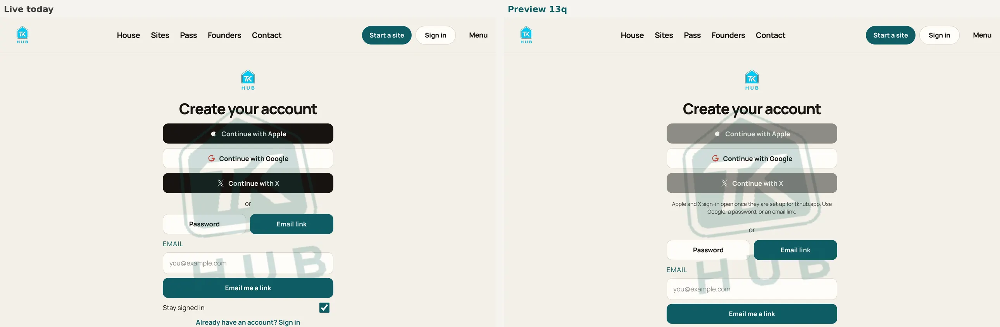
Plain privacy section
What stays in your browser and what is sent to TK Hub (orders, messages, sign-in codes). Every existing sentence stays.
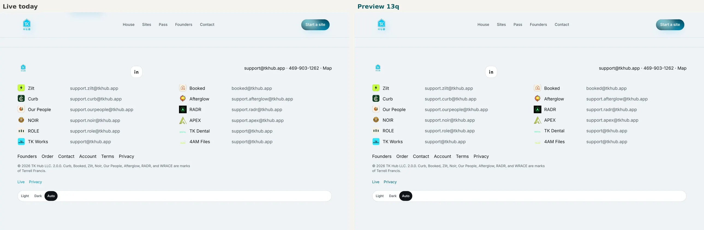
Delete the house account in this browser
Type DELETE, press the button. Only this site's data in this browser; the request form also gains a "TK Hub house account" choice.
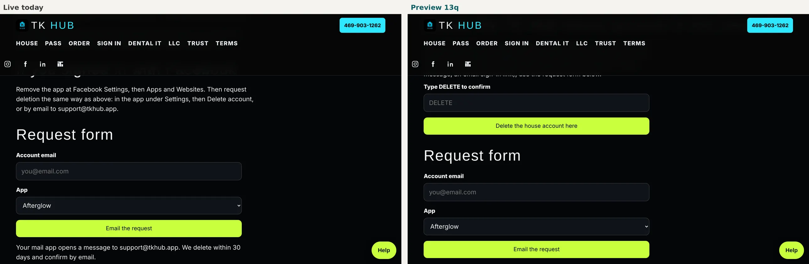
/desk and /devices: personal Gmail moved behind owner sign-in (your OK, Nov 13 7:33 PM)
Each address now says "Owner only · sign in to view" and links to a private owner page (GitHub sign-in; only you and collaborators can open it), where every address is kept word for word. Nothing was deleted.
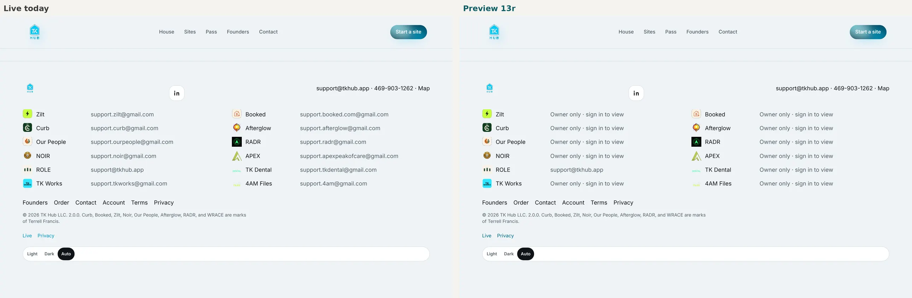
Drive (separate page /drive/v30.html; the live game is untouched)
Sky, sun and time of day
Crisp Clear weather with a visible sun, real Fog, a "Live time" button (L key). Every car, mode, sound and control kept.
Buildings
Building fronts at 4x detail with scanned concrete and clean glass, night window lights aligned.
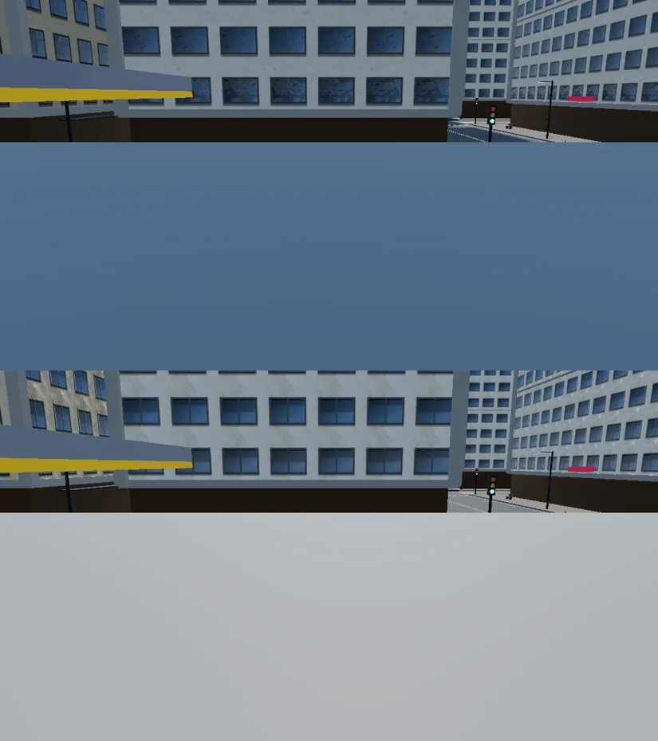
Shop windows
Real storefronts on every ground floor, softly lit at night.
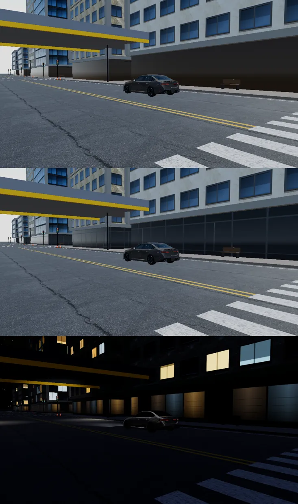
Street trees and highway
Trees on sidewalks where they fit, groves and grass along the top-speed highway.
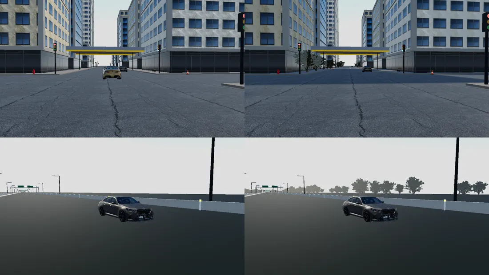
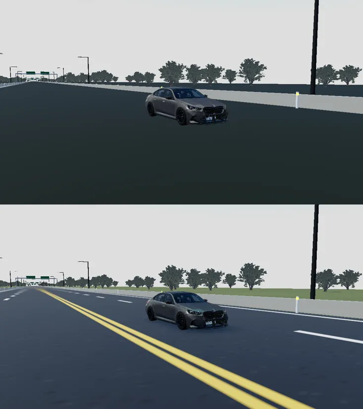
Overpass and weather
The stunt overpass looks like real concrete with hazard stripes (ceiling ride unchanged); new surfaces turn white in Snow and wet in Rain.
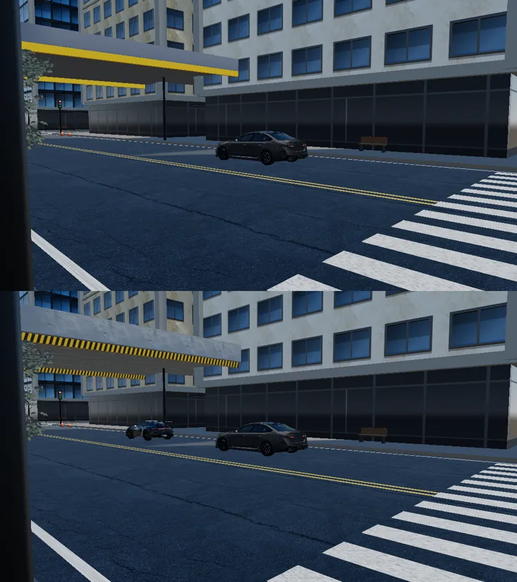
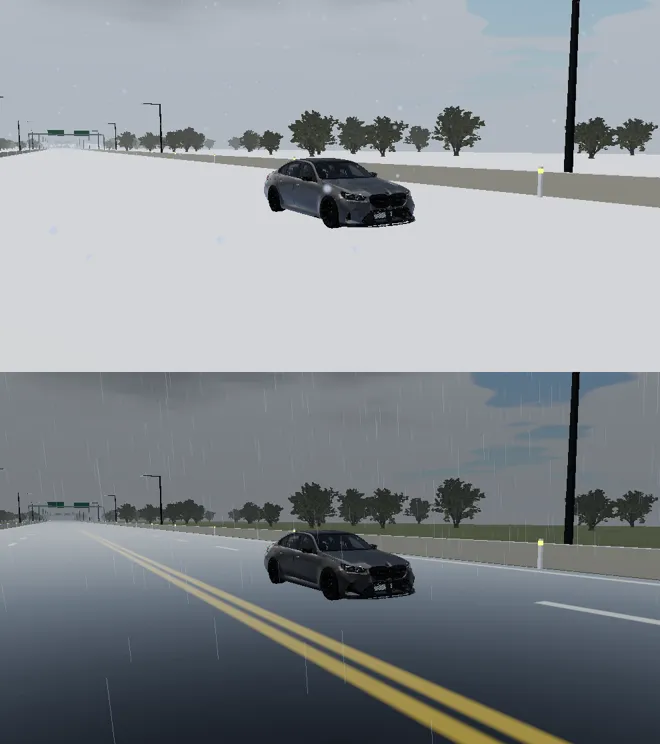
Still waiting on you
- Publish 13r? Say yes and the House Officer uploads the ready package (delete nothing; one-step rollback).
- Apple and X sign-in (H22): sign in to the Apple Developer and X developer portals, and someone signs in to Supabase. Then the buttons switch on.
- /get-zip (D17): the zip it downloads is missing. Upload it, or OK a "not available yet" note.
- Older preview copies (R21): earlier preview folders in the public preview repo still show the old /desk and /devices addresses. OK to delete those older folders?
- Old script files (D18): some old script files still contain the old Gmail strings (not shown on any page). OK to swap them for the @tkhub.app inboxes?
- Sharper founder photos: only 400-pixel versions exist; send the originals and they go in.